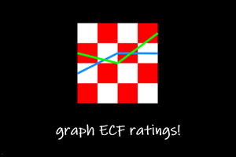
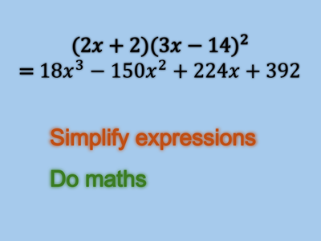
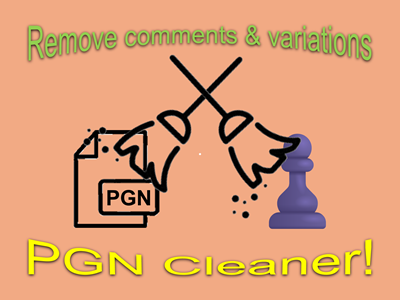

ECF Grapher is a simple web app that takes an ECF (English Chess Federation) rating code and shows a graph of their rating over time.

YuSimplify is a simple web app that takes math expressions and simplifies them. The app only accepts simple symbols and ASCII input.

PGN cleaner is a simple tool that takes a PGN and gets rid of comments and/or variations.
I am working on a project currently.